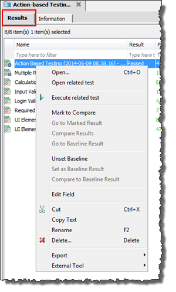
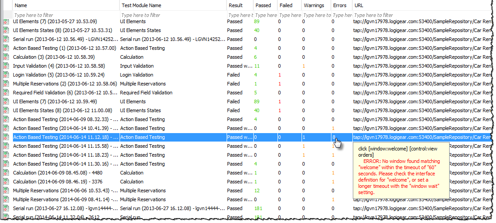

Repository result list view
A repository results list view displays a list of all repository test results contained within either the Results node or one of its subfolders.

The following operations can be performed on a repository test result list view:
Common operations
You can find various common operations that can be performed on a repository test result list view at Common operations.
Opening a result
Opening the source test module
You can have the editor open the test module responsible for a given test result by selecting Open related test on the context menu.Re-executing the tests
You can re-execute the test(s) responsible for selected test result(s) by selecting Execute related test on the context menu. (Learn more.)Setting/unsetting a baseline result
Any repository-based test result can be set as the baseline for the test module with which it is associated. Alternatively, if a given baseline result no longer needs to be designated as a baseline, you can unset it. Use the Set as baseline result and Unset baseline commands of the context menu for these purposes. (See Setting baseline result, and Unsetting baseline results for further information.)
Comparing test results
Side-by-side comparison of test results, or side-by-side comparison between a test result and a baseline result from the same test module, enable you to track your progress over time. To compare a repository test result to its corresponding baseline, use the Compare to baseline result command of the context menu.
The Mark to compare, Compare results, and Go to marked result commands may be used to compare any two "peer" results, where neither is required to be a baseline. (More information is available at Comparing results with baseline and Comparing results without baseline.)
Cut-Paste operations, and Delete command
- From the repository test result list view, you can remove a given repository test
result from one result folder and paste it to another by performing the
Cut and Paste operations from the
context menu.Tip:
- In addition to the conventional cut-and-paste and copy-and-paste from the context menu, you can drag and drop a project item, or a selection of items, from a list view into a folder or node of the same type in the TestArchitect explorer tree.
- Performing drag-and-drop within the same project is equivalent to cutting and pasting. Performing a drag-and-drop across different projects, on the other hand, is a copy-and-paste operation.
- During a drag operation, at any time your mouse pointer is over a location that cannot accept the type of item being dragged, the pointer turns into a black crossed circle . Releasing the mouse button at this point simply cancels the operation.
- Use the Delete command, from the context menu, to remove the selected repository test result(s).
Renaming test results
Repository test results can be renamed using Rename on the context menu.Converting test result to external files
From the context menu, a local test result can be converted and exported to the following:- HTML files (learn more.)
- ZIP format, for backup or re-importing. (learn more.)
- XML files in xUnit format (learn more.)
- XML Detail files for backup or purpose (learn more.)
Integration with third-party tools
TestArchitect seamlessly integrates with several powerful third-party tools, to assist in application development, continuous integration, and test management. Interfaces with HP Quality Center (QC), and Team Foundation Server/Microsoft Test Manager (TFS-MTM) are all available to extend TestArchitect's functionality and empower your and your team.
- HP Quality Center:
- Upload TA test results to QC (learn more)
- Team Foundation Server-Microsoft Test Manager:
- Upload TA test results to TFS (learn more)
Previewing summary of a checkpoint failure or an automation warning/error

Share Via...